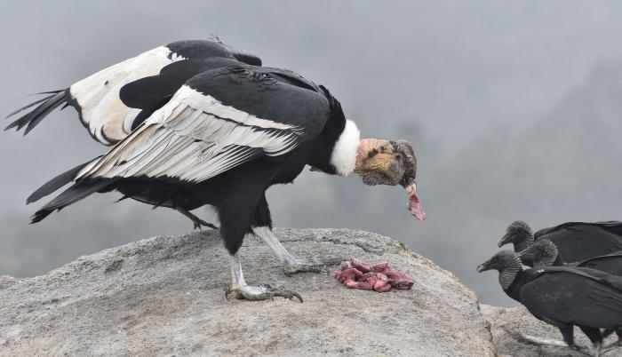

El cóndor por lo general se alimenta de animales muertos. Una vez localizada la carroña, los cóndores no descienden a comer de manera inmediata sino que se limitan a volar sobre la misma o se posan en algún lugar desde donde esta se vea claramente. Uno o dos días pueden pasar hasta que finalmente se acercan. Comienzan a alimentarse en los puntos más accesibles o blandos de los cadáveres, es decir, los ojos, lengua, ano, ubre o testículos, abdomen y entrepierna. Con sus fuertes y cortantes picos desgarran los tejidos y abren los cueros, lo que adicionalmente facilita el aprovechamiento de la pieza por parte de carroñeros de menor tamaño. Un cóndor puede ingerir unos 5 kg de carne en un día y asimismo puede ayunar hasta cinco semanas. También come animales enfermos e incluso se han registrado casos de cóndores atacando a animales pequeños o desvalidos.
Los dormideros, compartidos por ejemplares adultos, sub-adultos y juveniles de ambos sexos están generalmente localizados en riscos altos y protegidos de la lluvia, el viento y potenciales depredadores. En la mayoría de los casos vistos los dormideros y posaderos preferidos, y por ende disputados, son los que reciben más temprano los rayos solares.[cita requerida] Siendo que la carroña está distribuida al azar, los animales usan repetidamente varios sitios de descanso o pernocta dependiendo de la disponibilidad de alimento en el área llegando a concentraciones de hasta ciento veinticuatro individuos.
En ambiente natural, uno de los aspectos menos conocidos del cóndor es el referido a su reproducción. Los cóndores son básicamente monógamos, es decir que escogen una pareja y permanecen con esta de por vida. Solo en caso de que uno de los dos muera, el otro busca una nueva pareja. El ciclo reproductivo del cóndor, incluido el cortejo, apareamiento, incubación y levante del polluelo hasta su emancipación dura aproximadamente dos o tres años. La especie posee el período de incubación más prolongado entre las aves rapaces; en el momento de estro o celo el color comúnmente rojizo de la piel de la cabeza se les torna amarillento. Luego de cincuenta y seis a sesenta días de incubación compartida, nace el polluelo el cual es alimentado por ambos padres con carne regurgitada. A los seis meses ya intenta dar sus primeros vuelos en el área inmediata a su lugar de nacimiento y a los nueve el juvenil está listo para acompañar a sus padres en sus vuelos. De ellos asimila los comportamientos básicos para su supervivencia. Al cabo de un año y medio o dos se integra a la población local, y disputa un lugar en la carroña.